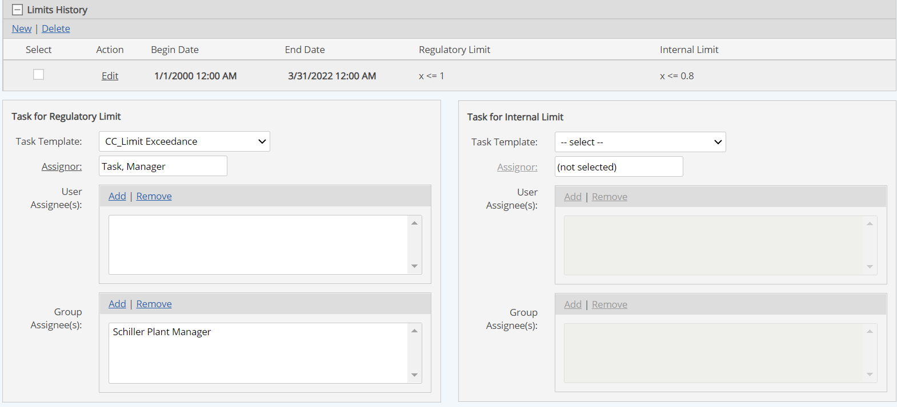
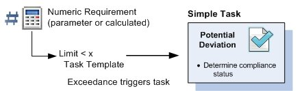
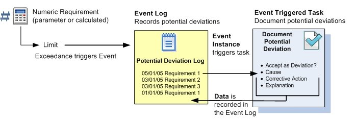

To trigger a task when a limit is exceeded, you can select a task template to apply. You may apply a task template to the regulatory limit or the internal limit or both. An assignor and assignee(s) must be designated. Both assignor and assignee(s) are notified when a task is triggered. Optionally, you may also define a workflow to be automatically created. The workflow and the conditions for triggering it are specified on the task template. See Task Triggered Workflows
If your EMS system is integrated with GX2, you can choose a GX2 Event from the Task Template list to be automatically created. For more information on event reports in GX2, see Reporting an Event in The Cority User Guide.
To assign a task when a limit is exceeded:
Click Add for either the User or Group Assignee box, then select the user(s)/group(s) to assign to the task.

A task that is associated directly with the limit is a simple task which allows the task assignee to determine the compliance status.

If further documentation of exceedances is required, an Event Log can be set up to monitor the requirement instead. A task may then be associated with the Event Log. Assigning a task from an Event Log allows you to keep track of deviation details and follow-up actions for reporting through custom event fields.
